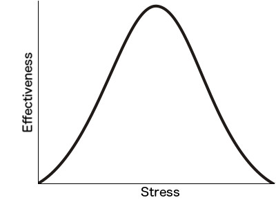

It’s a bit strange for me to be doing work related to Arc again, since the last time I worked on an Arc project five years ago, I burned out.
And I didn’t really have a reason to burn out. I mean, I was attempting the two-job route (“to work at things you don't like to get money to work on things you do”), i.e. I took a part time job that wasn’t so great (but still OK) to meet expenses while I worked on my project, and I was living in a garage to save on rent, and I was unhappy with the direction my project was going... yet none of that was so terrible that I would have thought that I’d burn out over it.
Yet burn out I did: I started acting weird towards people, and finally I said, “I need to stop”, and I stopped.
I wasn’t until a few years later at a Steve Pavlina workshop that I got an idea of what had been going on.
At the workshop (if I’m remembering this correctly, it’s been a while) Steve drew a graph of stress vs. effectiveness, something like:

that is, too much stress makes it hard to be effective, and so does too little stress (i.e. lazing about on the beach or watching movies is relaxing but it’s hard to get work done if you’re doing it all the time).
And Steve’s point (again if I’m remembering correctly) is that where people get tripped up is when they notice that their effectiveness is less than they’d like it to be and they try to do more of what they’re already doing: for people on the right of the graph (too much stress) the trap is to try harder (to add more stress to get more done); and for people on the on the left side (with too little stress) the trap is to try to make things easier rather than adding focus and discipline.
I realized that what had happened was that I had fallen into the right-hand side trap.
I’m used to overcoming a certain amount of laziness: I don’t particularly want to get up in the morning, but I get up anyway; there’s a project I want to work on, though I don’t particularly feel like working on it right this moment, and I get myself to work on it anyway.
And so as I became unhappy with my project and my situation I pushed myself harder. Until I burned out, and started acting like an asshole towards people, and finally bailed.
What’s funny looking back on this is that it was all internal. There wasn’t any external bad thing that had happened to me: it was just me. Starting to get a little unhappy, and then pushing myself harder, and then getting a little more unhappy... until finally I crapped out.
That too much or too little stress can be bad for effectiveness is pretty well known, I would think, but the insight that people can respond to seeing their effectiveness go down by turning their stress dial in the wrong direction was new to me.
So I thought it might turn out to be useful for someone if I related my story and they found themselves in a similar situation.